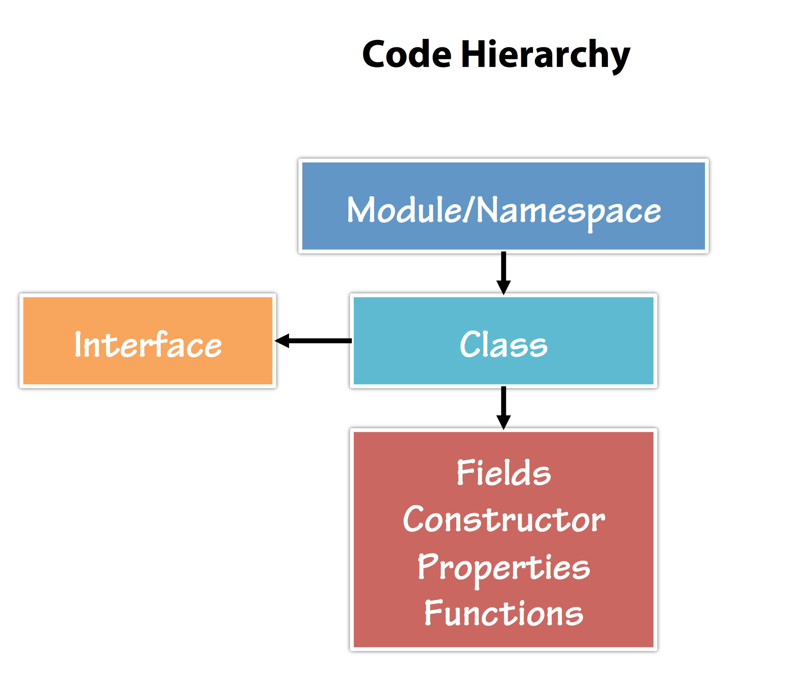
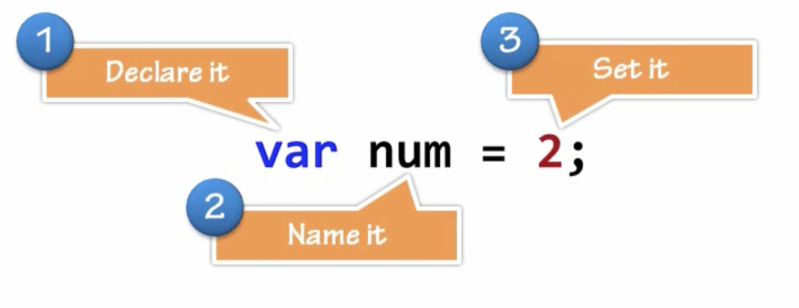
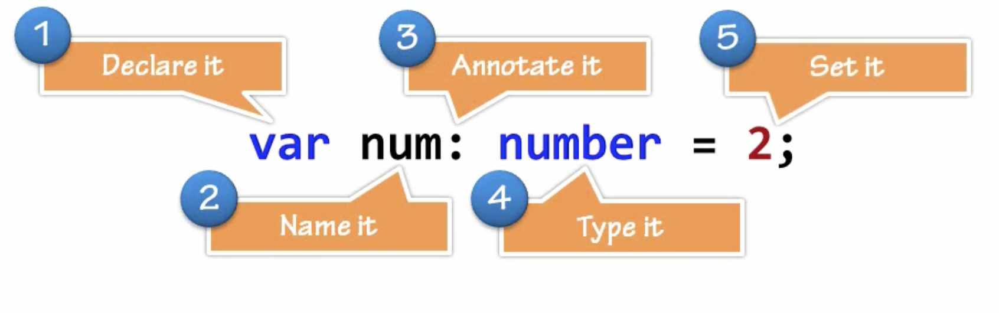

TypeScript
| Keyword | Hva' gør den? |
|---|---|
| class | Container for members such as properties and functions |
| constructor | Provides initialization functionality in a class |
| exports | Export a member form a module |
| extends | Extend a class or interface |
| implements | Implement an interface |
| import | Import a module |
| interface | Defines code contract that can be implemented by types |
| module/namespace | Container for classes and other code |
| public/private | Member visibility modifiers |
| ... | Rest parameter syntax |
| => | Arrow syntax used with definition and functions |
| < typename> | <> characters use to cast/convert between types |
| : | Separator between variable/parameter names and types |
TypeScript is transpiled into JavaScript.
Transpiling is a specific term for taking source code written in one language and transforming into another language that has a similar level of abstraction.
Code Hierarchy
In javascript you just have functions. You use namespaces to get it out of the global scope

Primitive Types
Javascript

Typescript

| Type | Code |
|---|---|
| Any type (explicitly untyped) | any |
| void type (null or undefined, use for function returns only) | void |
| String | string |
| Number | number |
| Boolean | boolean |
Enum
enum Options {
FIRST,
EXPLICIT = 1,
BOOLEAN = Options.FIRST | Options.EXPLICIT
}
Custom primitives. Type aliases
| Type | Code |
|---|---|
| Integer | type int = number |
| Float | type float = number |
(!) The JS does not have types Integer and Float. It is only the type aliases. So you can make your code more documented and give a hint for programmers.
String Literal Types
| Type | Code | ||
|---|---|---|---|
| CSS type property position | `type cssPosition = "absolute" | "relative" | "fixed";` |
Object type literals
| Concept | Code |
|---|---|
| Object with implicit Any properties | { foo :any; bar :any } or { foo; bar; } |
| Object with optional property | { required :Type; optional? :Type; } |
| Hash map | { [key :string] :Type; } |
| Indexable types | { [id :number] :Type; } |
Arrays
| Concept | Code |
|---|---|
| Array of strings | string[] or Array<string> |
| Array of functions that return boolean | {() :boolean;}[] or Array<()=>boolean> |
Indexable Interface
Similarly to how we can use interfaces to describe function types, we can also describe types that we can “index into” like a[10], or ageMap["daniel"]. Indexable types have an index signature that describes the types we can use to index into the object, along with the corresponding return types when indexing. Let’s take an example:
interface StringArray {
[index: number]: string;
}
let myArray: StringArray;
myArray = ["Bob", "Fred"];
let myStr: string = myArray[0];
Above, we have a StringArray interface that has an index signature. This index signature states that when a StringArray is indexed with a number, it will return a string.
Tuples
A tuple is a finite ordered list of elements. A tuple in TypeScript is much like a typed list except that it is immutable (unchangeable) once created.
| Concept | Code |
|---|---|
| Tuple of list with first item number and second string | let list :[number, string] = [123, 'abc'] |
| or | let list :Array<number, string> = [123, 'abc'] |
Tuple type
type keyValuePair = [number, string];
let list :keyValuePair = [123, 'abc']
Interface represents a tuple type
interface KeyValuePair extends Array<number | string> { 0: string; 1: number; }
Functions
| Concept | Code |
|---|---|
| Function | { (arg1 :Type, argN :Type) :Type; } or (arg1 :Type, argN :Type) => Type; |
| Constructor | { new () :ConstructedType; } or new () => ConstructedType; |
| Function type with optional param | (arg1 :Type, optional? :Type) => ReturnType; |
Function type with rest param |
(arg1 :Type, ...allOtherArgs :Type[]) => ReturnType; |
| Function type with static property | { () :Type; staticProp :Type; } |
| Default argument | function fn(arg1 :Type = 'default') :ReturnType {} |
| Arrow function | (arg1 :Type) :ReturnType =>; {} or (arg1 :Type) :ReturnType =>; Expression |
This based type guards
interface IteratorResult<CompletedType, SuspendedType> {
value :CompletedType | SuspendedType;
done :this is { value :CompletedType };
}
Support for F-Bounded Polymorphism
Type parameters as constraints
function assign<T extends U, U>(target :T, source :U) {}
Overload
How resolve this exception?
TS2345: Argument of type '...' is not assignable to parameter of type '...'. Type '...' is not assignable to type '...'
One solution with overload:
foo(a :string ) :void;
foo(a :string[]) :void;
foo(a) {
if (!Array.isArray(a)) a = [a];
a = a.map(x => x.toUpperCase());
console.log(a);
}
foo('abcdef'); // Ok
foo(['abc', 'def']); // Ok
foo(123); // Error!
Generics
Function using type parameters
<T>(items :T[], callback :(item :T) => T) :T[]
Interface with multiple types
interface Pair<T1, T2> {
first :T1;
second :T2;
}
Constrained type parameter
<T extends ConstrainedType>() :T
Generic type aliases
Type aliases requiring type parameters
type Source<T> = T | (() => T);
function foo<T>(p: Source<T>) :T {
return (typeof p === "function") ? p() : p;
}
// Usage:
foo<string>('abc');
foo<()=>number>(() :number => 123);
foo<()=>number>(function() :number { return 456 });
But compiler show error when using union type containing a function:
Cannot invoke an expression whose type lacks a call signature.
Check invoke an expression whose type lacks a call signature
Typecast
type Source<T> = T | (() => T);
function foo<T>(p: Source<T>) :T {
return (typeof p === "function") ? (<()=>T>p).call(this) : p;
}
Type assertion
type Source<T> = T | (() => T);
function foo<T>(p: Source<T>) :T {
return (typeof p === "function") ? (p as (()=>any))() : p;
}
Best practice (may be?)
Is the same that typeof === "function" doesn't strip the object type. One way is to check typeof === "function" and assert that as a test for whether it's a callable object or not using user-defined type guards.
type Source<T> = T | (() => T);
function foo<T>(p: Source<T>) :T {
return (((p :any) :p is Function => typeof p === "function")(p)) ? p() : p;
}
Type casting (assertion) and hinting
| Concept | Code | |
|---|---|---|
| Call map() from type `a :string | string[]` | (<string[]> a).map(s=>s.toUpperCase()) |
| ... in JSX | (a as string[]).map(...) |
|
| Assertion for multi type `let v :string | number` | parseInt( <string> v ) |
User defined type guard functions
let a :string|string[];
if (((obj :any) :obj is [] => 'map' in obj)(a))
a.map( x => x.toUpperCase() );
Or
let isValidArray = (obj :any) :obj is string[] =>
/Array/.test(Object.prototype.toString.call(obj))
&& 'map' in obj
&& 'function' === typeof obj.map.call
;
let a :string|string[];
if (isValidArray(a))
a.map( x => x.toUpperCase() );
Dinamic type
| Concept | Code |
|---|---|
| Dinamic type of any object | type typeOfObject = typeof SomeObject; |
Example
let Some = Math.round( Math.random() ) ? '' : 1;
type numOrStr = typeof Some;
let foo :numOrStr;
foo = 123;
foo = 'abc';
foo = {}; // Error!
Interface
interface IChild extends IParent, SomeClass {
property :Type;
optionalProp? :Type;
optionalMethod?(arg1 :Type) :ReturnType;
}
Class
class Child extends Parent implements IChild, IOtherChild {
property :Type;
defaultProperty :Type = 'default value';
private _privateProperty :Type;
static staticProperty :Type;
constructor(arg1 :Type) {
super(arg1);
}
private _privateMethod():Type {}
methodProperty :(arg1 :Type) => ReturnType;
overloadedMethod(arg1 :Type) :ReturnType;
overloadedMethod(arg1 :OtherType) :ReturnType;
overloadedMethod(arg1 :CommonT) :CommonReturnT {}
static staticMethod() :ReturnType {}
subclassedMethod(arg1 :Type) :ReturnType {
super.subclassedMethod(arg1);
}
}